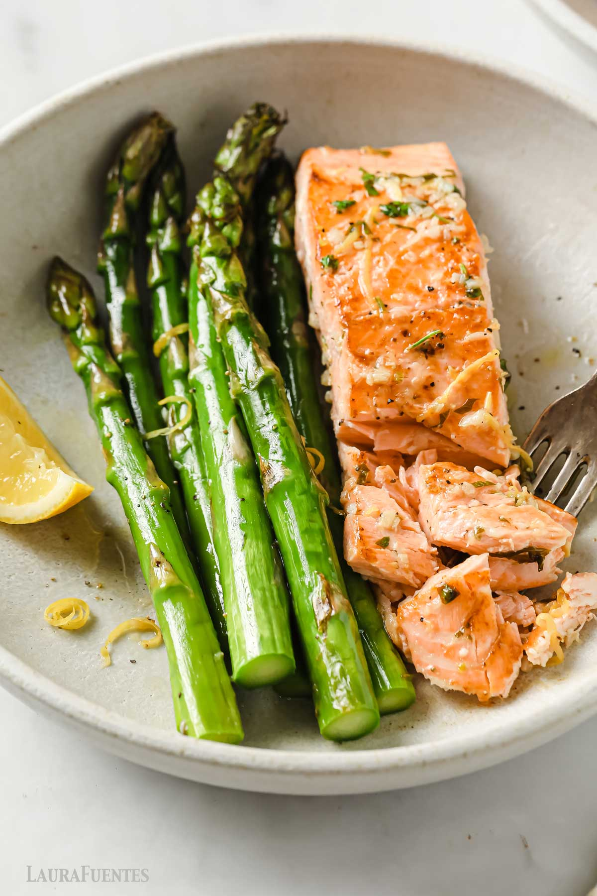
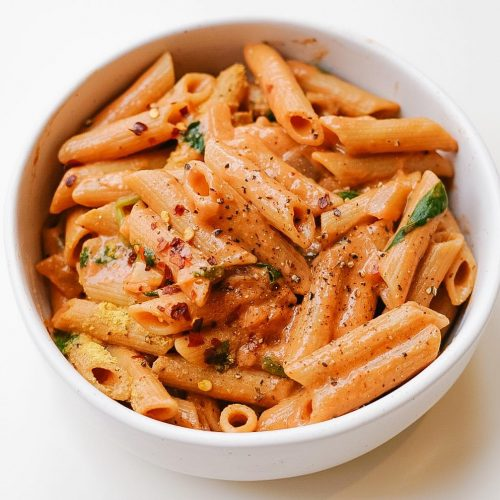

Breakfast
Eggs Benedict

Ingredients:
- Egg
- English muffin
- Vinegar
- Water
- Butter
- Egg yolk
- Lime juice
- Heavy cream
- Salt & pepper
Procedure:
- Toast English muffin
- Cook slice of ham/ canadian bacon (optional)
(Egg Poaching)
- Fill pot with 3 inches of water and boil; then reduce to a simmer
- Add splash of vineger
- Crack an egg into a small cup/bowl
- Lower egg into simmering water
- Cook for 3-5 minutes
- Remove with splotted spoon
(Hollandaise Sauce)
- Melt butter in saucepan
- Beat egg yolks in separate bowl
- Add lime juice, heavy whipping cream, salt and pepper
- Add small amount of hot butter to egg mixture
- Stir well
- Repeat process while slowly adding one spoonful of hot butter to egg mixture
- Add mixture back to saucepan
- Cook for few more seconds
Lunch
Salmon
Ingredients:
- Salmon
- Butter
- Salt, pepper, & garlic salt
- Lemon
- Asparagus
Procedure:
(Salmon)
- Slice salmon into smaller chunks
- Wash salmon and dry
- Marinate with salt, pepper, and garlic salt
- Cut a slice of lemon and place on top of salmon
- Using airfryer or pan on stovetop, cook with butter
(Asparagus)
- Chop bottom stem of asparagus and wash
- Boil water
- Place asparagus in boiling water and let it steam for 5 minutes
Dinner
Pasta
Watch Video: Click here
Ingredients:
- Penne or any pasta (1 cup)
- Olive oil (2-3 tbsp)
- Minced garlic (1 tbsp)
- Finely chopped onion (1/2 onion)
- Tomato paste (3 tbsp)
- Red chilli flakes (1 tsp)
- Black pepper (1/2 tsp)
- Red chilli powder (1/4 tsp)
- Granulated sugar (1/2 tsp)
- Heavy whipping cream (6-7 tbsp)
- Salted butter (1/2 tbsp)
- Mozzarella cheese (2 tbsp)
- Fresh basil leaves (2-3)
Procedure:
- Add 1 tsp of salt in boiling water (Don't forget to save 1/4 cup of pasta water)
- Cook pasta for 12-13 minutes
- Add consecutively 2-3 tbsp olive oil, 1 tbsp minced garlic, and 1/2 finely chopped onion to pan
- Add 3 tbsp tomato paste and cook on low-medium fire for 2-2.5 minutes
- Add 1 tsp red chilli flakes, 1/2 tsp black pepper, and salt per taste; mix in
- Add 6-7 tbsp heavy whipping cream; mix
- Add 1/2 tbsp butter
- Add 1/4 cup of pasta water
- Add cooked pasta and mix into sauce
- Optional: add mozzarella cheese and top with basil leaves